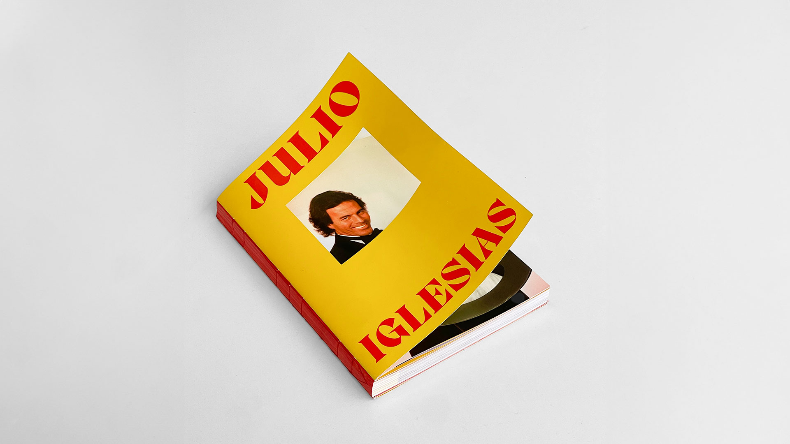
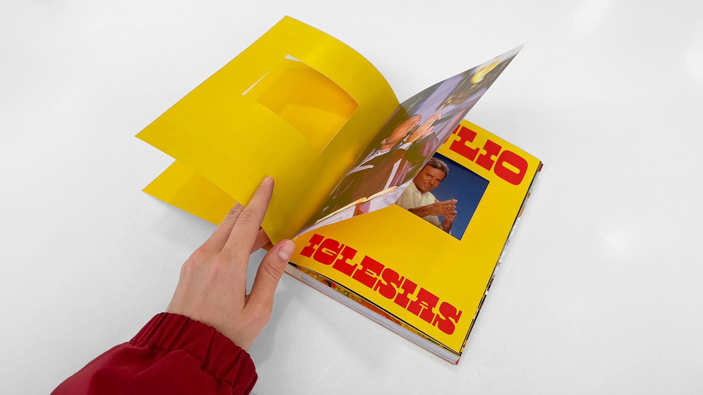
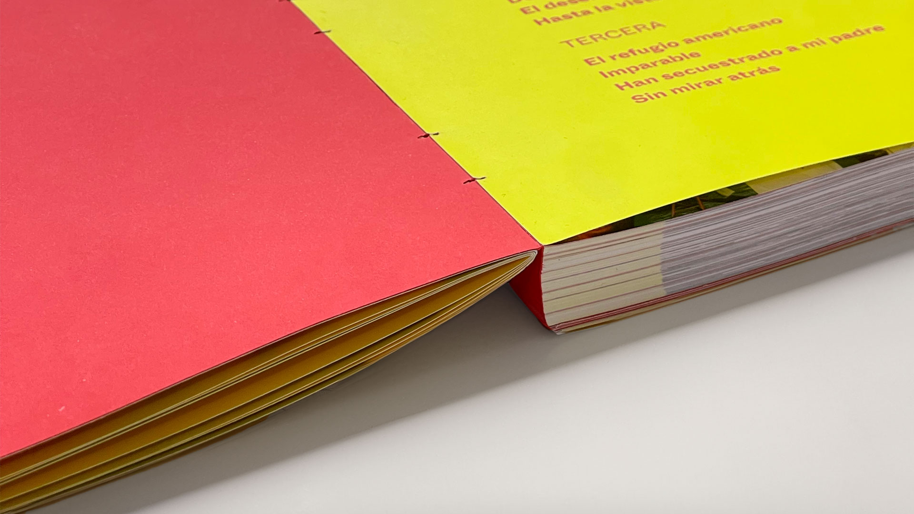
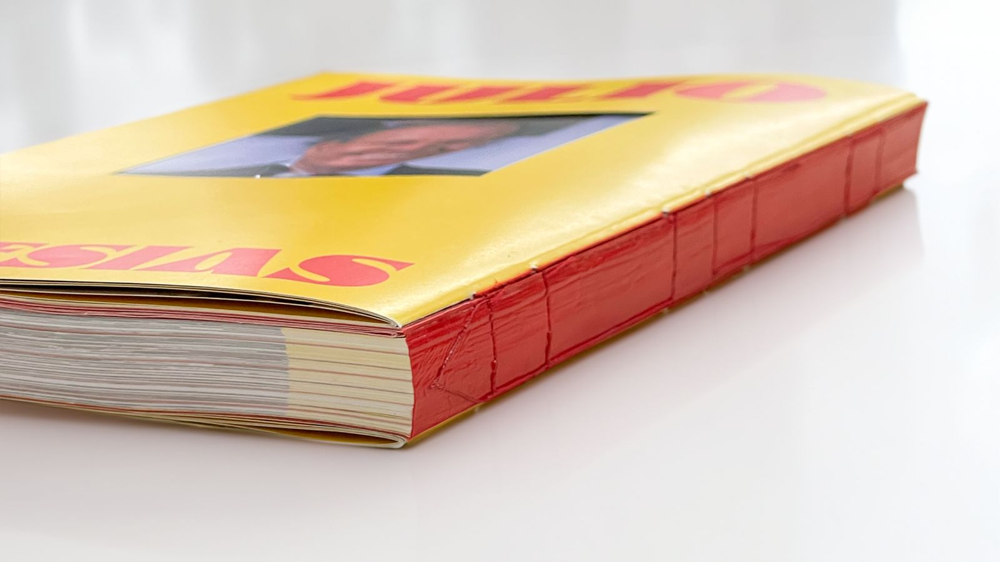

Julio Iglesias biography book
About
Julio Iglesias is a satire about the illusion constructed around emblematic figures of pop culture. The Spanish singer is used as a protagonist to explore the gap between the image idealized by the masses and the reality behind the scenes.
The publication proposes a fake biography, in which scandal attempts to surface beneath an appearance of normality. To represent this duality, the content was deconstructed through the use of artificial intelligence, such as ChatGPT and Photoshop, which intervened in the original texts and images, generating summaries and humorous montages with a traditional, conventional look.


